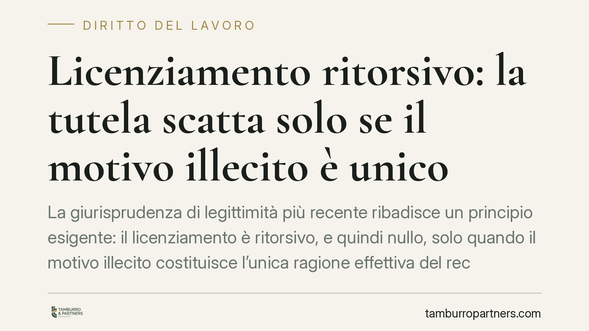

Licenziamento ritorsivo: la tutela scatta solo se il motivo illecito è unico
La giurisprudenza di legittimità più recente ribadisce un principio esigente: il licenziamento è ritorsivo, e quindi nullo, solo quando il motivo illecito costituisce l'unica ragione effettiva del recesso. La compresenza di una giustificazione lecita e reale esclude la ritorsività. Un orientamento che pesa sull'onere della prova e sull'esito del giudizio.

Il principio di esclusività
Il licenziamento ritorsivo è il recesso adottato dal datore di lavoro come reazione a un comportamento legittimo del dipendente: una denuncia, una rivendicazione retributiva, la partecipazione a un'attività sindacale. È una forma di rappresaglia mascherata da provvedimento organizzativo o disciplinare.
La Corte di Cassazione, Sezione Lavoro, ha consolidato un criterio rigoroso: perché scatti la nullità, il motivo illecito deve essere l'unico che ha determinato il licenziamento. Non basta che accanto all'intento ritorsivo esista un ulteriore movente. Se il datore dimostra una ragione lecita, reale e di per sé idonea a giustificare il recesso, la natura ritorsiva è esclusa.
È il cosiddetto principio di esclusività, mutuato dalla disciplina del motivo illecito unico e determinante del contratto (art. 1345 c.c.). Trasferito al rapporto di lavoro, significa che l'illecito deve essere la causa esclusiva, non una tra più concause.
Ritorsivo, discriminatorio, illegittimo: tre categorie da non confondere
Le tre nozioni non coincidono e producono tutele diverse.
Il licenziamento discriminatorio (fondato su sesso, religione, opinioni politiche, attività sindacale e altri fattori protetti) è nullo in ogni caso e non richiede la prova dell'esclusività: è sufficiente il collegamento con il fattore vietato.
Il licenziamento ritorsivo è anch'esso nullo, ma richiede la dimostrazione che l'intento di rappresaglia sia stato l'unica ragione del recesso.
Il licenziamento semplicemente illegittimo (privo di giusta causa o giustificato motivo, o viziato nella forma) non è nullo ma annullabile, con conseguenze economiche di regola meno intense.
La distinzione non è teorica: incide sul regime sanzionatorio applicabile.
Il regime di tutela in caso di nullità
Quando il licenziamento è dichiarato nullo perché ritorsivo o discriminatorio, la tutela è la più forte prevista dall'ordinamento: la reintegrazione nel posto di lavoro, accompagnata dal risarcimento del danno.
Questa tutela reintegratoria opera a prescindere dal numero dei dipendenti dell'impresa, secondo l'art. 18 dello Statuto dei Lavoratori (L. 300/1970) per i rapporti sorti prima del 7 marzo 2015, e secondo l'art. 2 del D.Lgs. 23/2015 (contratto a tutele crescenti) per le assunzioni successive. La nullità, a differenza dell'illegittimità, non conosce il limite dimensionale.
Implicazioni pratiche
Per il lavoratore. Contestare la natura ritorsiva di un licenziamento è un percorso probatorio impegnativo. L'onere di dimostrare l'intento illecito grava su chi lo invoca, ma la prova può essere raggiunta anche per presunzioni gravi, precise e concordanti: la vicinanza temporale tra una denuncia e il recesso, l'assenza di reali ragioni organizzative, la pretestuosità della contestazione disciplinare sono indizi valorizzabili dal giudice. Resta però il nodo dell'esclusività: se il datore prova una ragione lecita e concreta, la domanda di nullità cade.
Per l'impresa. L'esistenza di un motivo formalmente lecito non funziona come scudo automatico. Il giudice valuta la sostanza del provvedimento, non l'etichetta. Una giustificazione di comodo, artificiosa o smentita dai fatti non regge alla verifica giudiziale. La coerenza tra ragione dichiarata e vicenda concreta diventa decisiva.
Cosa fare in concreto
- Impugnare nei termini. L'impugnazione stragiudiziale del licenziamento va comunicata entro 60 giorni dalla ricezione; il ricorso giudiziale (o la richiesta di conciliazione/arbitrato) va poi depositato entro i successivi 180 giorni, a pena di inefficacia dell'impugnazione (art. 6 L. 604/1966, come modificato dalla L. 183/2010).
- Documentare la cronologia degli eventi. È utile ricostruire per iscritto la sequenza tra il comportamento del lavoratore (denuncia, rivendicazione, segnalazione) e il recesso, conservando date e riscontri.
- Verificare la coerenza della motivazione. È opportuno confrontare la ragione formale del licenziamento con i fatti effettivi, per individuare eventuali incongruenze utili in giudizio.
- Raccogliere elementi indiziari. Comunicazioni, email, testimonianze e precedenti disciplinari possono concorrere alla prova per presunzioni dell'intento ritorsivo.
- Valutare la strategia processuale. La scelta tra domanda di nullità (reintegra) e domanda di illegittimità incide sulle tutele: conviene calibrarla sulla solidità degli elementi disponibili.
---
*Contributo informativo a cura di Tamburro & Partners - Avv. Giuseppe Tamburro. Non costituisce parere legale.*
Ogni storia di lavoro ha i suoi tempi.
Se gestisci HR e vuoi un confronto su contenzioso, ispezioni o licenziamenti, scrivi allo studio. Ti rispondiamo entro un giorno lavorativo.